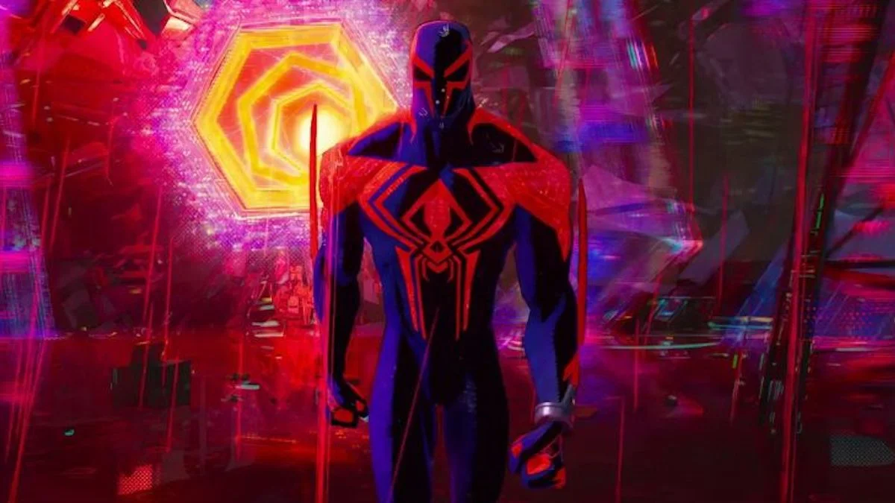

Une réplique qui implique des sacrifices
Publié le : 18/10/2023
Temps de lecture : 4 min
« Être Spiderman, c'est faire des sacrifices ». Cette réplique passée inaperçue pour la plupart des personnes est en fait la plus intéressante du film Spiderman : Across the spider-verse, mais en quoi ?
Les évènements canevas, ces moments inéluctables de la vie d'un Spider-héro qui le font avancer moralement et devenir plus fort. C'est au moment où le protagoniste, Miles Morales en prend connaissance que Miguel O'hara (Spiderman 2099) prononcera : « Être Spiderman, c'est faire des sacrifices. C'est notre mission » , une réplique pleine de subtilité qui démontre bien l'attention au détail dans la réalisation du film.
Une réplique significative
En effet, vous l'avez peut-être déjà remarqué mais cette réplique porte une structure familière que tout fan de Spiderman saurait reconnaître : elle reprend la très célèbre phrase de l'oncle Ben : « un grand pouvoir implique de grandes responsabilités ». Cependant, dans la version de Miguel, le grand pouvoir c'est être Spiderman et les grandes responsabilités se manifestent par les sacrifices, la mission. La similitude est d'autant plus intéressante que, bien qu'il ne soit ni son mentor, ni son oncle, Miguel est comme une figure paternelle pour Miles. En effet, tout au long du film il le traite lui et les autres Spider-héros comme des enfants. Il essaie de leur imposer son point de vue, ses idéaux et ses principes sous prétexte de protéger le Spider-verse.
Le psyché d'un antihéros
Ceci découle d'un défaut principal dans sa vision des choses : il prend trop littéralement le conseil de l'oncle Ben. Son pouvoir étant immense (voyager entre les dimensions), il implique des responsabilités tout aussi grandes (protéger l'ensemble de ces dimensions), là où les Spider-héros plus classiques se limitaient auparavant à une seule ville. Débordé par la lourde tâche de protéger le Spider-verse dans son intégralité, Miguel reste un humain et sa conscience n'est pas capable de supporter de telles responsabilités sur une période aussi longue que sa vie ce qui, ajouté à la perte de sa famille, le rend mentalement instable.
Une réponse qui se fera attendre
Ainsi, avec cette réplique, Miguel tente d'imposer sa vision des choses à Miles, qui est de prendre ses responsabilités et de sacrifier des vies s'il le faut pour le bien et la stabilité du Spider-verse. Cependant le film ne nous dit pas qui a raison et qui a tort, c'est une réponse qui résidera sûrement dans la suite directe : Beyond the Spider-verse qui devrait sortir en 2024.